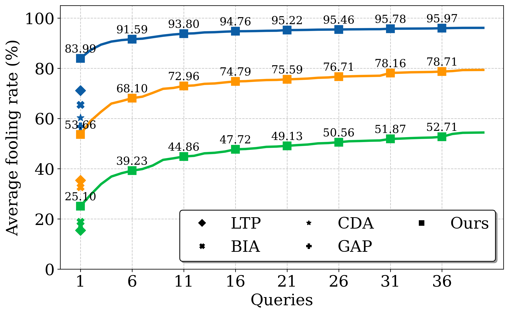
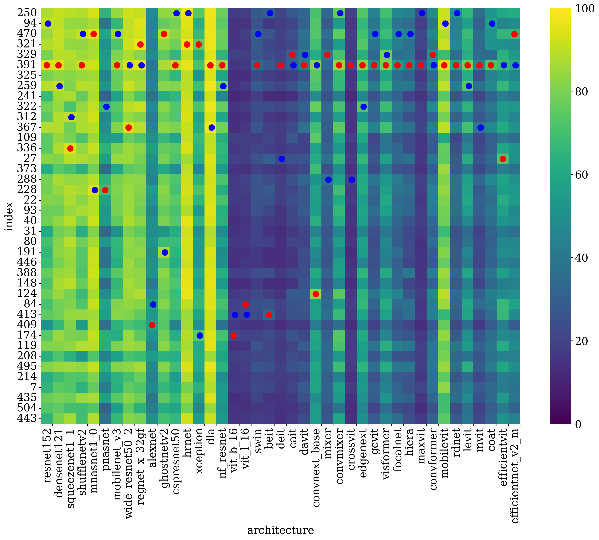

📊 Quantitative Results
Evaluation in Cross-Model Setting: We present a comprehensive quantitative evaluation of our NAT method against state-of-the-art baselines, LTP and BIA, across a diverse set of 41 ImageNet-pretrained models. Specifically, NAT achieves over 14% improvement in transferability for cross-modal settings and 4% improvement in cross-domain settings.
Evaluation in Cross-Domain Setting: We report the adversarial accuracy (in %) across three fine-grained datasets. We observe that our generators substantially outperform the baseline models in deceiving the target networks in single query $k = 1$ and multi-query $k = 10$ and $k = 40$ settings.
Cross-Modal Performance

Cross-Domain Transferability

Figure 3: Transferability Heatmap. Cross-architecture evaluation showing adversarial transferability from our neuron-specific generators (y-axis) across 41 target models (x-axis).
